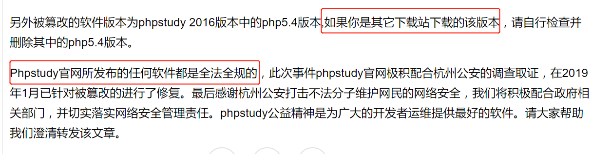
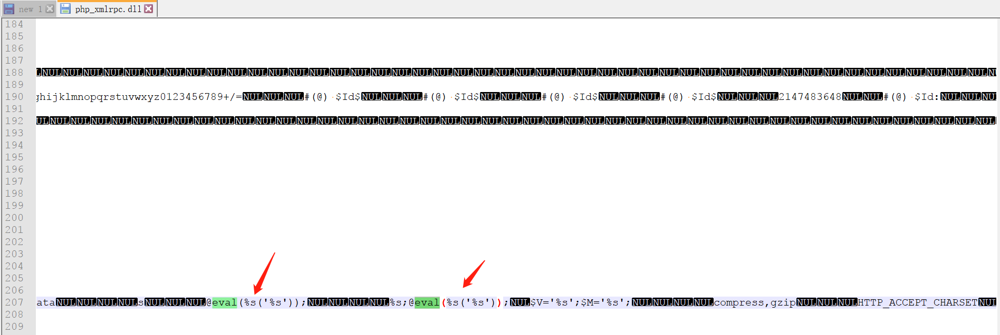
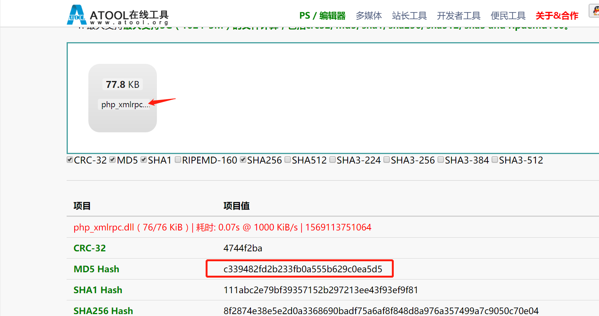
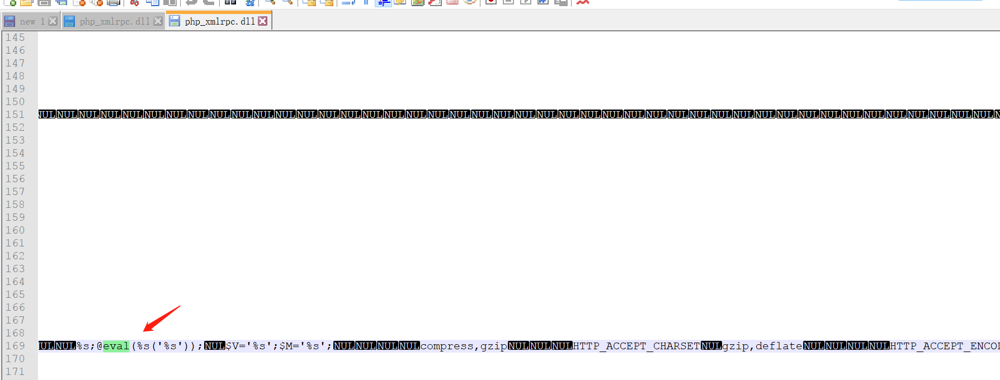
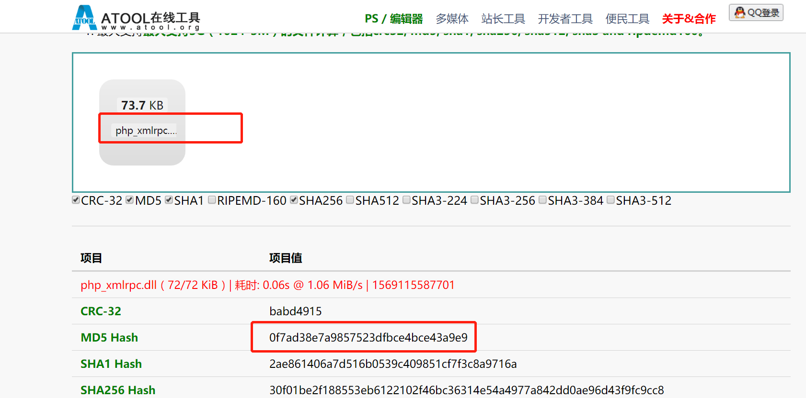
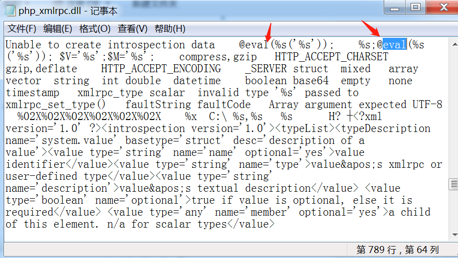
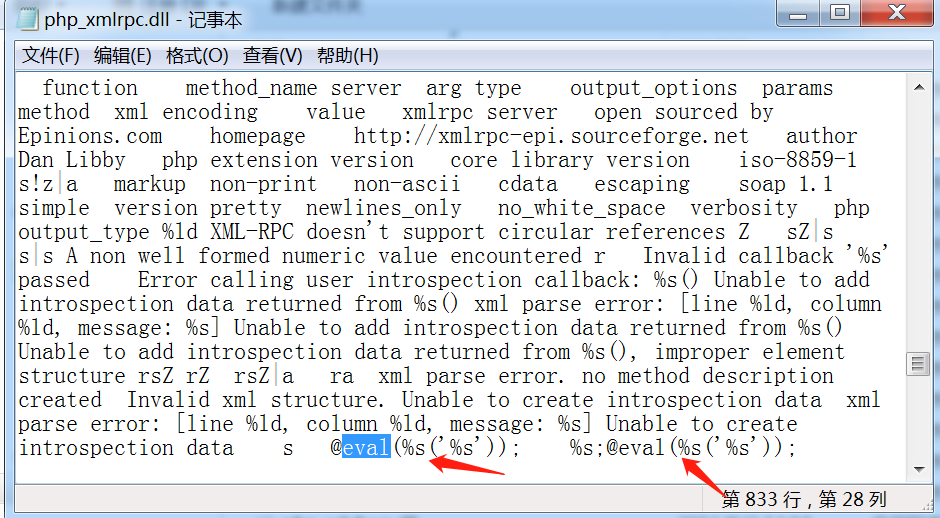

Phpstudy被暴存在隐藏后门-检查方法
一、事件背景
Phpstudy软件是国内的一款免费的PHP调试环境的程序集成包，通过集成Apache、PHP、MySQL、phpMyAdmin、ZendOptimizer多款软件一次性安装，无需配置即可直接安装使用，具有PHP环境调试和PHP开发功能，在国内有着近百万PHP语言学习者、开发者用户。
9月20日杭州公安微信公众账号发布了“杭州警方通报打击涉网违法犯罪暨“净网2019”专项行动战果”的文章，文章里说明phpstudy存在“后门”。
二、影响版本
phpstudy 2016版PHP5.4存在后门(软件作者声明)。
实际实际测试官网下载phpstudy2018版php-5.2.17和php-5.4.45也同样存在后门
三、后门检测方法
1、看官网发表声明说只要从官网下载的都不存在漏洞(套路深~~~~~~~)

2、哎呀，吓得的我赶紧查一下自己的电脑从官网下载安装的phpstudy有没有后门。
通过分析，后门代码存在于\ext\php_xmlrpc.dll模块中
phpStudy2016和phpStudy2018自带的php-5.2.17、php-5.4.45
phpStudy2016路径
php\php-5.2.17\ext\php_xmlrpc.dll
php\php-5.4.45\ext\php_xmlrpc.dll
phpStudy2018路径
PHPTutorial\php\php-5.2.17\ext\php_xmlrpc.dll
PHPTutorial\php\php-5.4.45\ext\php_xmlrpc.dl
用记事本打开此文件查找@eval，文件存在@eval(%s(‘%s’))证明漏洞存在
附后门文件MD5值：
MD5: 0F7AD38E7A9857523DFBCE4BCE43A9E9
MD5: C339482FD2B233FB0A555B629C0EA5D5
3、手工分析
3.1、查看phpstudy2016 php 5.4.45版本中是否存在漏洞，说明存在后门

3.2、使用在线计算文件md5，查看疑似后门文件的md5,发现MD5值确实是后门文件的md5值。

3.3、查看phpstudy2016 php 5.2.17版本中是否存在漏洞，发现存在后门

3.4、使用在线计算文件md5，查看疑似后门文件的md5,发现MD5值确实是后门文件的md5值。

3.5、查看phpstudy2018 php 5.2.17版本中是否存在漏洞，说明存在后门

3.6、使用在线计算文件md5，查看疑似后门文件的md5,发现MD5值确实是后门文件的md5值。（0f7ad38e7a9857523dfbce4bce43a9e9）
3.7、查看phpstudy2018 php 5.4.45版本中是否存在漏洞，说明存在后门

3.8、使用在线计算文件md5，查看疑似后门文件的md5,发现MD5值确实是后门文件的md5值。（c339482fd2b233fb0a555b629c0ea5d5）
四、修复方法
1、可以从PHP官网下载原始php-5.4.45版本或php-5.2.17版本，替换其中的php_xmlrpc.dll
https://windows.php.net/downloads/releases/archives/php-5.2.17-Win32-VC6-x86.zip
https://windows.php.net/downloads/releases/archives/php-5.4.45-Win32-VC9-x86.zip
2、目前phpstudy官网上的版本不存在后门，可在phpsudy官网下载安装包进行更新
-------------------------------------------------------------------------------------
phpStudy后门漏洞利用复现:https://www.cnblogs.com/yuzly/p/11610061.html